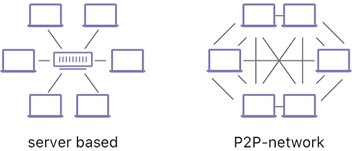
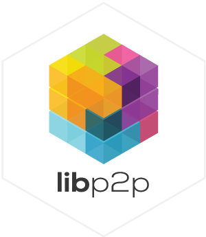
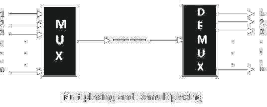

<!DOCTYPE html>
<html lang="en">
  <head>
    <meta charset="utf-8" />
    <meta name="viewport" content="width=device-width, initial-scale=1.0, maximum-scale=1.0, user-scalable=no" />

    <title>Networking</title>
    <link rel="shortcut icon" href="./../../../favicon.ico" />
    <link rel="stylesheet" href="./../../../dist/reset.css" />
    <link rel="stylesheet" href="./../../../dist/reveal.css" />
    <link rel="stylesheet" href="./../../../assets/styles/polkadot-theme.css" id="theme" />
    <link rel="stylesheet" href="./../../../css/highlight/shades-of-purple.css" />

    <link rel="stylesheet" href="./../../.././assets/styles/custom-classes.css" />
    <link rel="stylesheet" href="./../../.././assets/styles/polkadot-theme-base.css" />
    <link rel="stylesheet" href="./../../.././assets/styles/PBA-theme.css" />
    <link rel="stylesheet" href="./../../.././plugin/design-system/index.css" />

  </head>
  <body class="site">
    <header class="site-header">
      <a href="">
        
      </a>
      
    </header>
    <main class="site-reveal reveal">
      <article class="slides">
        <section  data-markdown><script type="text/template">

# Networking
</script></section><section  data-markdown><script type="text/template">
## Objective

After this lecture, you will gain a basic understanding of what goes on in Substrate's networking layer, how it works at a high level, what subprotocols exist and features that are provided to extend the default usage of libp2p.
</script></section><section  data-markdown><script type="text/template">
## Why P2P

- Peer-to-peer (P2P) networks enable communication without relying on centralized servers
- Peers can share consensus critical information, broadcast transactions or enable other nodes to connect to them


</script></section><section  data-markdown><script type="text/template">
## libp2p

<div class="left">

- Substrate uses [libp2p](https://libp2p.io/), an open source, modular P2P networking stack by the IPFS community
- [Implemented in Rust](https://github.com/libp2p/rust-libp2p)

</div>

<div class="right">



</div>
</script></section><section  data-markdown><script type="text/template">
## Why libp2p

- Generalized
- Upgradable and backwards compatible
- Plug-and-play

<aside class="notes"><p>Like Substrate, libp2p is modular and extensible: with it, you can implement different transports ontop of any Substrate chain.
It&#39;s designed so that you can upgrade any element you want, all while remaining backwards compatible.
Enables plug-and-play networking for any distributed application</p>
</aside></script></section><section  data-markdown><script type="text/template">
## Modularity

- Not all projects need to support all protocols
- You can extend libp2p with other protocols
- Libp2p's concept of a "multiaddress" makes this possible
</script></section><section  data-markdown><script type="text/template">
## Multiaddress examples: IP address

`/ip4/90.46.231.22/udp/25000`

- Node with IP address `90.46.231.22`
- Listening on UDP port 25000
</script></section><section  data-markdown><script type="text/template">
## Multiaddress examples: WebSocket

`/dnsaddr/example.com/tcp/80/ws`

- Requires using the [WebSocket protocol](https://en.wikipedia.org/wiki/WebSocket) on top of TCP port 80
- Using DNS to resolve the hostname example.com.
</script></section><section  data-markdown><script type="text/template">
- Nodes are _encouraged_ to support a set of common protocols
- ... But not required.

<aside class="notes"><p>Supporting a set of common protocols is not technically mandatory. This makes it possible to easily experiment with new protocols or new ideas, and to deploy new versions of protocols while still supporting old versions without adding technical debt.</p>
</aside></script></section><section  data-markdown><script type="text/template">
## The main libp2p subprotocols

- [secio](https://docs.rs/libp2p/0.2.1/libp2p/secio/index.html) - responsible for encrypting communications.
- [mplex](https://docs.rs/libp2p/0.2.1/libp2p/mplex/index.html) or [yamux](https://docs.rs/libp2p/0.2.1/libp2p/yamux/index.html) - protocols on top of _secio_ that are responsible for [multiplexing](https://en.wikipedia.org/wiki/Multiplexing).
</script></section><section  data-markdown><script type="text/template">
## What is multiplexing?

<div class="left">

- Multiple signals can be sent to multiple devices over a single connection.
- The bandwidth of a single connection can be utilized effectively.
- The signal is then "demultiplexed" to arrive to the target device.

</div>

<div class="right">



</div>

TODO: Redo diagram or add in source: https://www.tutorialspoint.com/analog_communication/analog_communication_multiplexing.htm
</script></section><section  data-markdown><script type="text/template">
## Other protocols

- Projects are able to define their own networking protocol.

- Common networking protocols include (also used in Substrate):
  - [identify](https://github.com/libp2p/rust-libp2p/tree/master/protocols/identify/src) - allows peers to exchange information about each other (e.g. public keys and known network addresses)
  - [ping](https://github.com/libp2p/rust-libp2p/blob/master/protocols/ping/src/lib.rs) - a liveness check for peers to quickly see if another peer is online.
  - [Kademlia](https://en.wikipedia.org/wiki/Kademlia): a DHT that specifies the structure of the network and the exchange of information through node lookups.
</script></section><section  data-markdown><script type="text/template">
## Versioning

TODO
</script></section><section  data-markdown><script type="text/template">
## libp2p notification stream API

TODO

<aside class="notes"><p>demo this with code.</p>
</aside></script></section><section  data-markdown><script type="text/template">
## Untrusted P2P networking models

- You can’t trust your peers
- Network synchrony assumptions
- Asynchrony assumptions

<aside class="notes"><p>discuss things you need to consider when writing networking code and different types of attacks at the network level, e.g. DoS, Eclipse attacks (for chain synchronization).</p>
</aside></script></section><section  data-markdown><script type="text/template">
### Substrate-specific networking protocols

Two main crates:

- [`sc_network`](https://docs.substrate.io/rustdocs/latest/sc_network/index.html)
- [`sc_consenus`](https://paritytech.github.io/substrate/latest/sc_consensus/)
</script></section><section  data-markdown><script type="text/template">
<div class="left">

- Block announces
- Transactions gossip
- Grandpa gossiping
- Block requests
- Merkle proof requests

</div>

<div class="right">

- Storage requests
- Collation gossiping
- Collation request
- Availability distribution
- Availability retrieval
- Statement distribution

</div>

<aside class="notes"><p>Here&#39;s a list of what the various Substrate-specific networking protocols do.
Show the various non-libp2p standard protocols (sync, light, transactions, block announces).</p>
</aside></script></section><section  data-markdown><script type="text/template">
## Transport layer

Mechanisms for establishing a connection:

- UDP
- TCP
- QUIC

<aside class="notes"><p>Discuss how QUIC can enable more peers but introduces some fairness issues.</p>
</aside></script></section><section  data-markdown><script type="text/template">
## Peers

- A node’s identity is represented with the `PeerId` struct
- It uniquely identifies a machine on the network
</script></section><section  data-markdown><script type="text/template">
## Peer Behaviors

- Discovery
- Banning

<aside class="notes"><p>A peer in Substrate has two main types of behavior: discovery and banning.</p>
</aside></script></section><section  data-markdown><script type="text/template">
## Node discovery

- Nodes need to know a list of nodes to join (identities and their address)
- Building this list is called the **discovery mechanism**

<aside class="notes"><p>In order for our node to join a peer-to-peer network, it has to know a list of nodes that are part of said network.</p>
</aside></script></section><section  data-markdown><script type="text/template">
## Substrate peer-set manager

PSM: Contains the strategy for choosing which nodes the network should be connected to.

<aside class="notes"><p>See: <a href="https://crates.parity.io/sc_peerset/index.html">https://crates.parity.io/sc_peerset/index.html</a>.
Briefly go over API.</p>
</aside></script></section><section  data-markdown><script type="text/template">
## Discovery mechanism

- Bootstrap nodes: hard-coded node identities for other peers to connect to.
- mDNS: performs a [UDP](https://en.wikipedia.org/wiki/User_Datagram_Protocol) broadcast on the local network for listening nodes to respond with their identity.
- Kademlia random walk: performs random [Kademlia](https://en.wikipedia.org/wiki/Kademlia) `FIND_NODE` requests on the configured Kademlia DHTs (one per configured chain protocol) in order for nodes to propagate to us their view of the network.

<aside class="notes"><p>Bootstrap nodes are hard-coded node identities and addresses passed alongside with the network configuration.</p>
</aside></script></section><section  data-markdown><script type="text/template">
## Gossip example

- “Polite” gossip protocol
- See: `sc_network`

<aside class="notes"><p>Code walkthrough.
This is not traditional gossip where TTLs are guaranteed.
Instead, we have peers periodically inform each other of their opinion protocol state and then impose some rules about what peers are allowed to send each other as a result.
This is a gossip model secure in a p2p environment where some peers are untrustworthy.</p>
</aside></script></section><section  data-markdown><script type="text/template">
## Protocol version upgrade example

TODO: prepare demo.

<aside class="notes"><p>how how to use <code>sc-network</code> to configure peers to attempt to connect on a protocol but negotiate a fallback protocol (typically the old version).
Show how to detect when the peer is connected on the fallback protocol and trigger different behavior as a result.</p>
</aside></script></section><section  data-markdown><script type="text/template">
## Workshop

1. Implement a polite gossip protocol
2. Create a protocol version upgrade example

<aside class="notes"><p>Have a look at <a href="https://github.com/paritytech/polkadot/tree/master/node/network">https://github.com/paritytech/polkadot/tree/master/node/network</a></p>
</aside></script></section><section  data-markdown><script type="text/template">
Readings:

- [Why Libp2p](https://www.parity.io/blog/why-libp2p)
- [Overseer](https://w3f.github.io/parachain-implementers-guide/node/overseer.html) (from the Polkadot Parachain Host Implementer's Guide)
</script></section>
      </article>
    </main>

    <script src="./../../../dist/reveal.js"></script>
    <script src="./../../../plugin/markdown/markdown.js"></script>
    <script src="./../../../plugin/highlight/highlight.js"></script>
    <script src="./../../../plugin/zoom/zoom.js"></script>
    <script src="./../../../plugin/notes/notes.js"></script>
    <script src="./../../../plugin/math/math.js"></script>

    <script type="module">
      import DesignSystem from "./../../../plugin/design-system/design-system.js"

      function extend() {
        var target = {};
        for (var i = 0; i < arguments.length; i++) {
          var source = arguments[i];
          for (var key in source) {
            if (source.hasOwnProperty(key)) {
              target[key] = source[key];
            }
          }
        }
        return target;
      }

      // default options to init reveal.js
      var defaultOptions = {
        controls: true,
        progress: true,
        history: true,
        center: true,
        transition: 'default', // none/fade/slide/convex/concave/zoom
        plugins: [
          RevealMarkdown,
          RevealHighlight,
          RevealZoom,
          RevealNotes,
          RevealMath,
          DesignSystem
        ]
      };

      // options from URL query string
      const queryOptions = Reveal().getQueryHash() || {};

      const options = extend(defaultOptions, {"width":1400,"height":900,"margin":0,"minScale":0.2,"maxScale":2,"transition":"none","controls":true,"progress":true,"center":true,"slideNumber":true,"backgroundTransition":"fade"}, queryOptions);
      options.baseUrl = '';
      Reveal.initialize(options);
    </script>
  </body>
</html>
